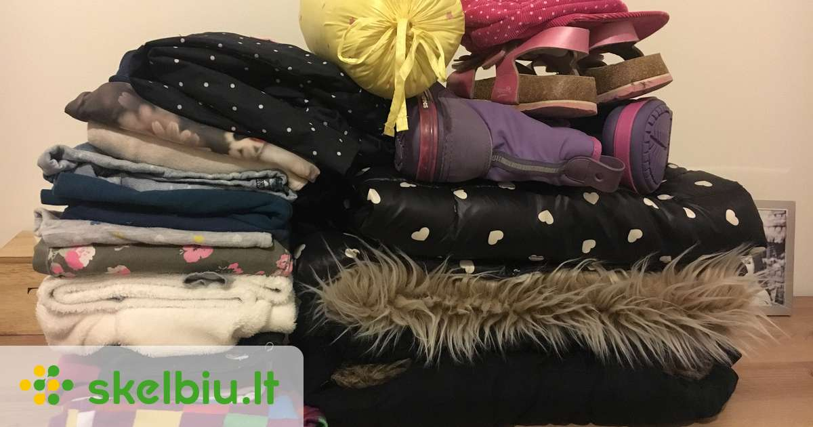
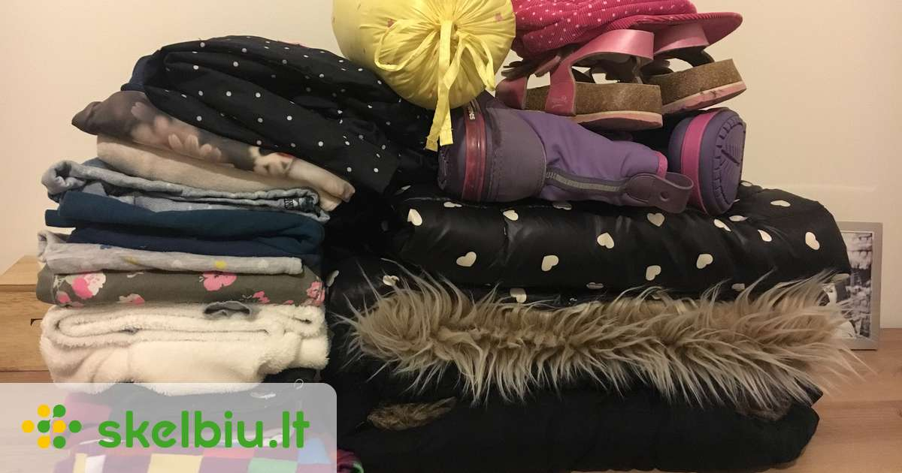

Išskirtinė rudens nuolaida: Iki -50% 5
Moterims Vyrams Vaikams ABOUT YOU YOU Dar nesi prisiregistravęs Prisijungti Užsakymų sekimas Mėgstamiausių sekimas Tavo pageidavimų sąrašas tuščias! Pridėk ką nors prie tavo sąrašo. Į pageidavimų sąrašą Tavo prekių krepšelis tuščias! Pridėti prekę į prekių krepšelį. Dar nieko neradai? Pirkti naują prekę Atrask drabužių komplektus Drabužių komplektai Marian Comfy Look Ben Dahlhaus Cool Urban Look by Replay Akikuma Twin Look by Iriedaily Lukas H. Easy Everyday Look Atrask visus drabužius Stories Bėgimo batelių gidas Amortizacija Stylish through fall Rieker Kiekvienam stiliui Puikios plunksninės striukės Your support on the road Essential Collection Atrask visas istorijas Drabužiai Naujienos Striukės Džinsai Džemperiai Megztiniai Marškinėliai Kelnės Paltai Marškiniai Apatiniai Kostiumai ir švarkai Proginiai Dideli dydžiai Maudymosi drabužiai Tvarūs Populiariausi prekių ženklai Batai Naujienos Sportbačiai Batai ir auliniai batai Sportiniai batai Bateliai Atviri batai Tvarūs Populiariausi prekių ženklai Sportas Sporto šakos Laisvalaikis Fitnesas Bėgimas Futbolas Slidinėjimas Snieglenčių sportas Dviračių sportas Plaukimas Riedlenčių sportas Rodyti daugiau Sportiniai drabužiai Kelnės sportui Sportiniai marškinėliai Sportinės striukės Sportiniai džemperiai Sportiniai apatiniai drabužiai Plaukimo ir banglentininkų drabužiai Tvarūs Sportiniai batai Lauko batai Bėgimo bateliai Treniruočių bateliai Sportinės kuprinės ir rankinės Sportiniai krepšiai Sportinės kuprinės Populiariausi prekių ženklai Laisvalaikis Fitnesas Bėgimas Futbolas Paplūdimio sporto šakos Aksesuarai Naujienos Kepurės Laikrodžiai Diržai Kuprinės ir rankinės Šalikai ir šaliai Veido kaukės Juvelyriniai dirbiniai Piniginės ir kosmetinės Pirštinės Kaklaraiščiai ir aksesuarai Akiniai nuo saulės Tvarūs Populiariausi prekių ženklai Premium Naujienos Striukės ir paltai Džinsai Džemperiai Megztiniai Marškinėliai Kelnės Marškiniai Apatiniai drabužiai ir maudymosi drabužiai Kostiumai ir švarkai Batai Aksesuarai Populiariausi prekių ženklai IŠPARDAVIMAS Striukės Džinsai Džemperiai Megztiniai Marškinėliai Kelnės Paltai Marškiniai Apatiniai Kostiumai ir švarkai Dideli dydžiai Maudymosi drabužiai Batai Aksesuarai Premium Sportas Prekių ženklai JACK & JONES Nike Sportswear ADIDAS ORIGINALS Only & Sons TOMMY HILFIGER Urban Classics NIKE LEVI'S TOM TAILOR Calvin Klein Jeans ADIDAS PERFORMANCE Champion Authentic... DIESEL Calvin Klein Rodyti daugiau Ieškoti pagal prekių ženklus Žieminės striukės, XS Žieminės striukės, S Žieminės striukės, M Žieminės striukės, L Žieminės striukės, XL Žieminės striukės, XXL Žieminės striukės, XXXL Žieminės striukės, mėlyna Žieminės striukės, pilka Žieminės striukės, žalia Žieminės striukės, raudona Žieminės striukės, juoda JACK & JONES Žieminės striukės Žieminės striukės, Vienspalvis Žieminės striukės, Spalvų blokavimas Žieminės striukės, Su spausdintais logotipais Žieminės striukės, Dygsniuota striukė Žieminės striukės, „Bomber“ stiliaus striukė Žieminės striukės, Įprastas prigludimas Drabužiai Naujienos Striukės Žieminės striukės Žieminės laisvalaikio striukės Demisezoninės striukės Rudeninės-žieminės striukės Dygsniuotos striukės Odinės striukės Liemenės Striukės nuo lietaus Džinsinės striukės Pūkinės striukės Laisvalaikio striukės „Bomber“ stiliaus striukės Džinsai Džemperiai Megztiniai Marškinėliai Kelnės Paltai Marškiniai Apatiniai Kostiumai ir švarkai Proginiai Dideli dydžiai Maudymosi drabužiai Tvarūs Batai Sportas Aksesuarai Premium IŠPARDAVIMAS Žieminės striukės vyrams 375 Prekių apžvalga Tavo stilius FiltrasNaujiena
Calvin Klein Jeans
199,00 EUR Siūlomi dydžiai : S, M, L, XL, XXLNaujiena
HOLLISTER
129,00 EUR Siūlomi dydžiai : S, M, L, XLNaujiena
HOLLISTER
119,00 EUR Siūlomi dydžiai : S, M, L, XL-11 %
ALPHA INDUSTRIES
195,00 EUR 219,00 EUR Siūlomi dydžiai : S, M, LNaujiena
HOLLISTER
129,00 EUR Siūlomi dydžiai : S, M, L, XL-10 %
HELLY HANSEN
179,00 EUR 199,00 EUR Siūlomi dydžiai : S, M, L, XL, XXL-15 %
INDICODE JEANS
84,90 EUR 99,90 EUR Siūlomi dydžiai : S, M, L, XL, XXLNaujiena
HOLLISTER
129,00 EUR Siūlomi dydžiai : S, M, L, XL, XXLNaujiena
Tvarus
TIMBERLAND
359,00 EUR Siūlomi dydžiai : M, L, XL, XXL, XXXLNaujiena
HOLLISTER
119,00 EUR Siūlomi dydžiai : S, M, L, XXL-11 %
Premium
Colmar
455,00 EUR 509,00 EUR Siūlomi dydžiai : XS, S, M, XL Žieminės striukės - daugiau įkvėpimo NaN / 5 Tommy Jeans Jackets & Parkas for the cold days Atrask New Outerwear Calvin Klein Jeans Atrask Kiekvienam stiliui Puikios plunksninės striukės Atrask Shop our favorites now! Urban Classics Atrask KITOKIA ŠILUMA Timberland Atrask Miesto gatvės stilius Magiškoji lapė ir ABOUT YOU Atrask Žieminės aprangos gidas Marc O’Polo Atrask TommyXLewis Tommy Hilfiger Atrask Gatvės stilius žiemą Marc O’Polo Denim Atrask ATSIDAVĘS STRIUKIŲ GAMINTOJAS Elvine Atrask feel stylish, feel casual, feel powerful - feel good. BRAX Atrask Eime į lauką kartu! s.Oliver Atrask Levi's® Seni buteliai. Nauji gėrimai. Atrask Herrlicher Atrask Pabėgimas nuo žiemos Reebok Classic AtraskNaujiena
Tvarus
TOMMY HILFIGER
229,00 EUR Siūlomi dydžiai : S, M, L, XL, XXLNaujiena
Premium
BOSS
449,00 EUR Siūlomi dydžiai : S, M, L, XL, XXLRekom.
-11 %
ARMANI EXCHANGE
319,00 EUR 359,00 EUR Siūlomi dydžiai : M, L, XL-10 %
Calvin Klein Jeans
295,00 EUR 329,00 EUR Siūlomi dydžiai : S, M, L 1 2 3 4 Vyrams / Drabužiai / Striukės / Žieminės striukėsDidelis pasirinkimas žieminių striukių vyrams ABOUT YOU internetinėje parduotuvėje
Lauke siaubingai šalta ir tu negali kelias savaites tiesiog sėdėti savo kambaryje priešais šildytuvą, turi palikti savo jaukius namus ir žengti į sniegą ir vėją? Tai nesukels jokių problemų, jei tik turi funkcionalią ir madingą vyrišką žieminę striukę . Populiariausi prekės ženklai mados rinkoje, tokie kaip „Jack & Jones“, „Tom Tailor“ ar „Tommy Jeans“, kuria nuostabius žieminių vyriškų striukių modelius šaltoms metų dienoms. Pagal savo asmeninius pageidavimus tu gali pasirinkti mėgstamą spalvą ir subtilų ar išraiškingą dizainą, ir tokiu būdu nepriekaištingai suderinti savo stilių. Vyriškų striukių žiemai modeliai yra kuriami remiantis dviem svarbiais principais, kurie yra būtini ir turi derėti tarpusavyje – tai yra funkcionalumas ir dizainas. Dizainas yra skonio reikalas, tačiau kalbant apie praktiškumą visi turbūt sutiktų – kad ji turi būti nepralaidi vėjui ir vandeniui, patogiai apgaubti visą kūną ir turėti maloniai šildančią ir nuo vėjo saugančią aukštą apykaklę. Gobtuvas taip pat yra labai naudingas, ypač jei jis taip pat dar yra padengtas minkštu sintetiniu kailiu - tuomet šiluma ir komfortas bet kokiu oru yra garantuoti. Daugelyje dizainų taip pat gali rasti dar ir papildomus, aptempus rankogalius, kurie nepraleidžia vėjo, o apatinė striukės dalis, apykaklė ir gobtuvas dar turi papildomus raištelius, kurių pagalba gali dar tvirčiau ir šilčiau apsigaubti. Taip būsi visiškai apsaugotas nuo žvarbaus vėjo.
Žieminės striukės vyrams – šimtai skirtingų dizainų ir spalvų
Jei nori išvengti gyvūninės kilmės medžiagų savo vyriškuose drabužiuose, susikoncentruok į ABOUT YOU siūlomas vyriškas žiemines striukes , nes didžioji dalis mūsų asortimento yra gaminama iš aukštųjų technologijų sintetinių pluoštų, pasižyminčių šiluma, vėjo nepralaidumu ir drėgmės sugėrimu. O kaip jų išvaizda? Čia tu esi tikrai gerose rankose, nes mažai kur rasi didesnę vyriškių žieminių striukių įvairovę su žinomiausių gamintojų modeliais ir plačiu spalvų pasirinkimu. Nesvarbu, ar ieškai prašmatnaus subtilių žemės spalvų žieminio dygsniuoto švarko su ryškiai oranžiniu pamušalu, o gal šaunios juodos baikerio stiliaus striukės, patogaus sportinio kamufliažinių spalvų varianto, o gal jaukaus drabužio su kailiniu gobtuvu, medinėmis sagomis ir daugybe kišenių - čia rasi visus įmanomus variantus, kurių tau tik gali prireikti kasdienai, specialioms progoms ar laisvalaikiui. Atrask naują garderobo papildymą, kuris dalyvaus visuose tavo nuotykiuose, o tu visada būsi šiltas ir sausas.
Vyriškos striukės žiemai – nuo sportiškų iki stilingų
ABOUT YOU internetinė parduotuvė tau siūlo didelį pasirinkimą populiarių prekės ženklų vyriškų žieminių striukių internetu . Įvairūs gamintojai siūlo platų striukių asortimentą šaltajam sezonui. Stilingas ir madingas, ar sportiškas ir funkcionalus? Peržvelk siūlomus modelius ir atrask savo stilių. Taip pat labai populiarios yra žieminės striukės vyrams su pūkiniu kamšalu ir dideliais kapišonais. Jos nėra storos, bet vis tiek yra labai šiltos. Daugybė vyriškų žieminių striukių išsiskiria savo unikaliu dizainu. Išdrįsk parodyti save ir savo stilių. Užsisakyk atrastus mėgstamiausius variantus lengvai, patogiai, ir svarbiausia – nemokamai, tiesiai į namus. O kam žiemą tikrai nešaltum, mūsų parduotuvėje rasi ir šiltus vyriškus šalikus , megztas kepures bei pirštines .
Mėgstami šios kategorijos prekių ženklai Žieminės striukės iš JACK & JONES Žieminės striukės iš ALPHA INDUSTRIES Žieminės striukės iš Urban Classics Žieminės striukės iš Blauer.USA Žieminės striukės iš HOLLISTER Mėgstamos šios kategorijos spalvos Žieminės striukės, juoda Žieminės striukės, mėlyna Žieminės striukės, raudona Žieminės striukės, ruda Žieminės striukės, balta Kitos įdomios temos Žieminės striukės, Įprastas prigludimas Žieminės striukės, Vienspalvis Žieminės striukės, Dygsniuota striukė Žieminės striukės, Spalvų blokavimas Žieminės striukės, „Bomber“ stiliaus striukėNieko nepraleisk!
Užsiprenumeruok naujienlaiškį ir gauk išskirtinį pasiūlymą.
Moterims Vyrams Noriu gauti informaciją apie dabartines tendencijas, pasiūlymus ir kuponus ateityje el. paštu. Bet kada galite prenumeratos atsisakyti nemokamai. Noriu gauti informaciją apie dabartines tendencijas, pasiūlymus ir kuponus ateityje el. paštu. Bet kada galite prenumeratos atsisakyti nemokamai. ABOUT YOU Apie mus Spauda Karjera Privatumo politika Sąlygos ir nuostatos Rekvizitai Mūsų privalumai Apmokėjimas pristačius Nemokamas pristatymas ir grąžinimas Didelis pasirinkimas 100 d. grąžinimo teisė Klientų aptarnavimas Paskambink mums 8800 800 29* Parašyk mums klientuaptarnavimas@aboutyou.lt Kontaktai Pagalba Partnerystės programa Naudojimosi sąlygos Saugus pirkimas Su mumis tavo duomenys saugūs! Drabužiai vyrams Drabužiai vyrams Striukės Kostiumai Vyriški sportbačiai Džinsai adidas batai vyrams Schiesser apatiniai Timberland batai vyrams Mėlyni kostiumai Levi's džinsai vyrams Kuprinės vyrams Rūbai sportui Apatiniai vyrams Batai vyrams Akiniai nuo saulės Odinės striukės Laikrodžiai Marškiniai Džemperiai Megztiniai Prekių ženklai vyrams SELECTED HOMME Marc O'Polo Superdry G-STAR RAW Jack Wolfskin JACK & JONES Ellesse JOOP! LEVI'S LACOSTE FILA BOSS Champion Authentic Athletic Apparel DIESEL Nudie Jeans Co POLO RALPH LAUREN QUIKSILVER STRELLSON About You Vokietija About You Austrija About You Šveicarija About You Šveicarija (fr) About You Nyderlandai About You Lenkija About You Čekija About You Belgija (fr) About You Belgija About You Slovakija About You Vengrija About You Rumunija About You Slovėnija About You Latvija About You Estija About You Kroatija About You Bulgarija About You Prancūzija About You Airija About You Danija About You Švedija About You Suomija Lietuva Sek mus! * Nemokamai iš visų tinklų. Skambinant iš užsienio gali būti taikomi mokesčiai.** Visos kainos nurodytos su PVM 5) Nėra jokių ypatingų sąlygų. https://www.aboutyou.lt/akcijos-salygos
- Žieminės striukės moterims - pirk internetu | ABOUT YOU
- Moteriškos Žieminės striukės eshop e50style.cz
- Drabužiai_vaikams DARE2B_REGATTE Žiemines_striukes_vaikams ...
- Ziemines striukes moterims | Sizeer.lt
- Vyriškos žieminės striukės
- Striukės vyrams internetu | Patogus pristatymas | Newmood
- Moteriškos striukės - Vulcan.lt
- STRIUKĖS VYRAMS virš 1580 modelių Žema kaina | Varle.lt
- Striukės - Paltai – Nauja kolekcija 2020 | Manzara
- Žieminės striukės vyrams | Sizeer.lt
- Žieminės striukės moterims - pirk internetu | ABOUT YOU
Temperatūrai vis žemėjant išbandykite žiemines striukes vyrams, kurios visas jūsų žiemos išvykas pavers tikru malonumu – jus maloniai apgaubs minkštas audinys, nebaisūs bus nuolat besimainantys vėjai ar net netikėtos pūgos. Jaukumo suteiks ir gobtuvas.
- Moteriškos Žieminės striukės eshop e50style.cz
Madingiausia žiemos apranga. Striukės ir paltai išpardavimo kainomis. Garantuojame, kad liksite patenkinti. Greitas pristatymas. Grąžinimo galimybė. Užsakymą išsiųsime jau kitą dieną. Jei prekė Jums netiks, grąžinsime sumokėtus pinigus. Nedvejokite, pirkite internetu populiariausioje internetinėje parduotuvėje. Primename – Kas dieną pridedame bent 20 naujų prekių ...
- Drabužiai_vaikams DARE2B_REGATTE Žiemines_striukes_vaikams ...
STRIUKĖS MOTERIMS Adidas, Bomboogie, BYoung... Žemos kainos garantija. NEMOKAMAI atsiimk vienoje iš 16 Varle.lt parduotuvių.
- Ziemines striukes moterims | Sizeer.lt
Moteriskos ziemines striukes. Norėdami sau užtikrinti komfortą ir terminę izoliaciją privalome ieškoti geriausių sprendimų. Jų rasti galima parduotuvėje Sizeer. Norint įsigyti tinkamą moterišką striukę reikia atkreipti dėmesį į keletą dalykų. Būtų gerai, kad ji turėtų apyklaklę, kuri dengia skruostus ir lūpas.
- Vyriškos žieminės striukės
Temperatūrai vis žemėjant išbandykite žiemines striukes vyrams, kurios visas jūsų žiemos išvykas pavers tikru malonumu – jus maloniai apgaubs minkštas audinys, nebaisūs bus nuolat besimainantys vėjai ar net netikėtos pūgos. Jaukumo suteiks ir gobtuvas, puoštas nusegamu dirbtiniu kailiu.
- Striukės vyrams internetu | Patogus pristatymas | Newmood
DARE2B striukytė skirta žiemai ir kuo puikiausiai tiks šaltomis pavasario dienomis. Pasižymi gera kokybe ir lengva priežiūra, Turinti100% poliesterį.Striukytės nepraleidžia vėjo, drėgmės, kvėpuojančios, fiksuojasi apačioje, reguliuojami rankogaliai, apsauginis sulankstomas gaubtas, tas kas vaiką apsaugo nuo lietaus ar sniego, kišenės yra užtraukiamos su užtrauktukais, turi ...
- Moteriškos striukės - Vulcan.lt
Moteriškos striukės,žieminė striukė, šilta striukė, striukės, striukės internetu, rubai internetu, drabuziai internetu
- STRIUKĖS VYRAMS virš 1580 modelių Žema kaina | Varle.lt
Mes siūlome jums rinktis stilingas ir tuo pačiu šiltas žiemines striukes: Striukės pakos - ne tik labai madingos, bet ir funkcionalios. Puikiai apsaugosite visą savo kūną nuo žiemos šalčio; Bomber modelio striukės - skirti modeliai, kurie papildomai izoliuoti, kad apsaugotų jus nuo sušalimo, geriausiai su gobtuvu bei kailiu.
- Striukės - Paltai – Nauja kolekcija 2020 | Manzara
Vyriškos Žieminės striukės Visada originalios firminės prekės -10% už naujienlaiškio prenumeratą Nemokamas pristatymas nuo 50 eurų 30 dienų prekės keitimui arba grąžinimui
- Žieminės striukės vyrams | Sizeer.lt
Kur įsigyti žiemines striukes moterims pigiau? Moteriškos žieminės striukės ko gero yra vienas brangiausių drabužių mūsų spintoje ir tai yra normalu. Jos turi būti aukštos kokybės, neperšlapti kai lauke lyja ar sninga, būti ganėtinai šiltos ir tuo pat metu atrodyti gražiai. Visi šie reikalavimai apsunkina darbą dizaineriams ...
Temperatūrai vis žemėjant išbandykite žiemines striukes vyrams, kurios visas jūsų žiemos išvykas pavers tikru malonumu – jus maloniai apgaubs minkštas audinys, nebaisūs bus nuolat besimainantys vėjai ar net netikėtos pūgos. Jaukumo suteiks ir gobtuvas.
Madingiausia žiemos apranga. Striukės ir paltai išpardavimo kainomis. Garantuojame, kad liksite patenkinti. Greitas pristatymas. Grąžinimo galimybė. Užsakymą išsiųsime jau kitą dieną. Jei prekė Jums netiks, grąžinsime sumokėtus pinigus. Nedvejokite, pirkite internetu populiariausioje internetinėje parduotuvėje. Primename – Kas dieną pridedame bent 20 naujų prekių ...
STRIUKĖS MOTERIMS Adidas, Bomboogie, BYoung... Žemos kainos garantija. NEMOKAMAI atsiimk vienoje iš 16 Varle.lt parduotuvių.
Moteriskos ziemines striukes. Norėdami sau užtikrinti komfortą ir terminę izoliaciją privalome ieškoti geriausių sprendimų. Jų rasti galima parduotuvėje Sizeer. Norint įsigyti tinkamą moterišką striukę reikia atkreipti dėmesį į keletą dalykų. Būtų gerai, kad ji turėtų apyklaklę, kuri dengia skruostus ir lūpas.
Temperatūrai vis žemėjant išbandykite žiemines striukes vyrams, kurios visas jūsų žiemos išvykas pavers tikru malonumu – jus maloniai apgaubs minkštas audinys, nebaisūs bus nuolat besimainantys vėjai ar net netikėtos pūgos. Jaukumo suteiks ir gobtuvas, puoštas nusegamu dirbtiniu kailiu.
DARE2B striukytė skirta žiemai ir kuo puikiausiai tiks šaltomis pavasario dienomis. Pasižymi gera kokybe ir lengva priežiūra, Turinti100% poliesterį.Striukytės nepraleidžia vėjo, drėgmės, kvėpuojančios, fiksuojasi apačioje, reguliuojami rankogaliai, apsauginis sulankstomas gaubtas, tas kas vaiką apsaugo nuo lietaus ar sniego, kišenės yra užtraukiamos su užtrauktukais, turi ...
Moteriškos striukės,žieminė striukė, šilta striukė, striukės, striukės internetu, rubai internetu, drabuziai internetu
Mes siūlome jums rinktis stilingas ir tuo pačiu šiltas žiemines striukes: Striukės pakos - ne tik labai madingos, bet ir funkcionalios. Puikiai apsaugosite visą savo kūną nuo žiemos šalčio; Bomber modelio striukės - skirti modeliai, kurie papildomai izoliuoti, kad apsaugotų jus nuo sušalimo, geriausiai su gobtuvu bei kailiu.
Vyriškos Žieminės striukės Visada originalios firminės prekės -10% už naujienlaiškio prenumeratą Nemokamas pristatymas nuo 50 eurų 30 dienų prekės keitimui arba grąžinimui
Kur įsigyti žiemines striukes moterims pigiau? Moteriškos žieminės striukės ko gero yra vienas brangiausių drabužių mūsų spintoje ir tai yra normalu. Jos turi būti aukštos kokybės, neperšlapti kai lauke lyja ar sninga, būti ganėtinai šiltos ir tuo pat metu atrodyti gražiai. Visi šie reikalavimai apsunkina darbą dizaineriams ...

 
